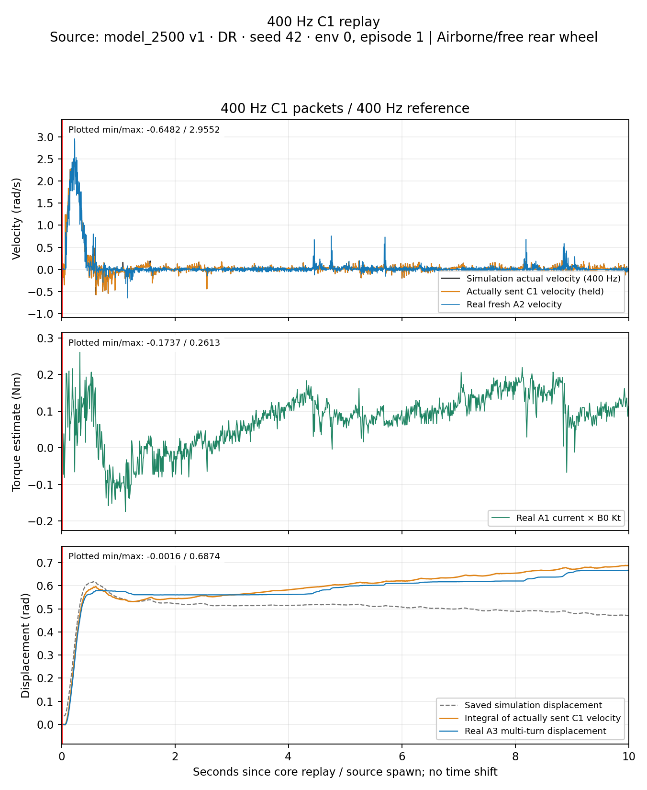
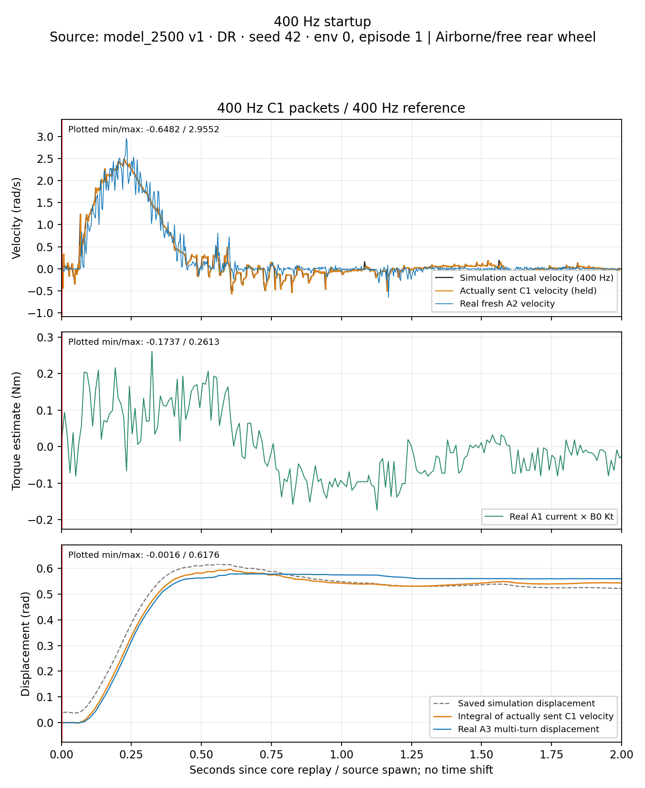
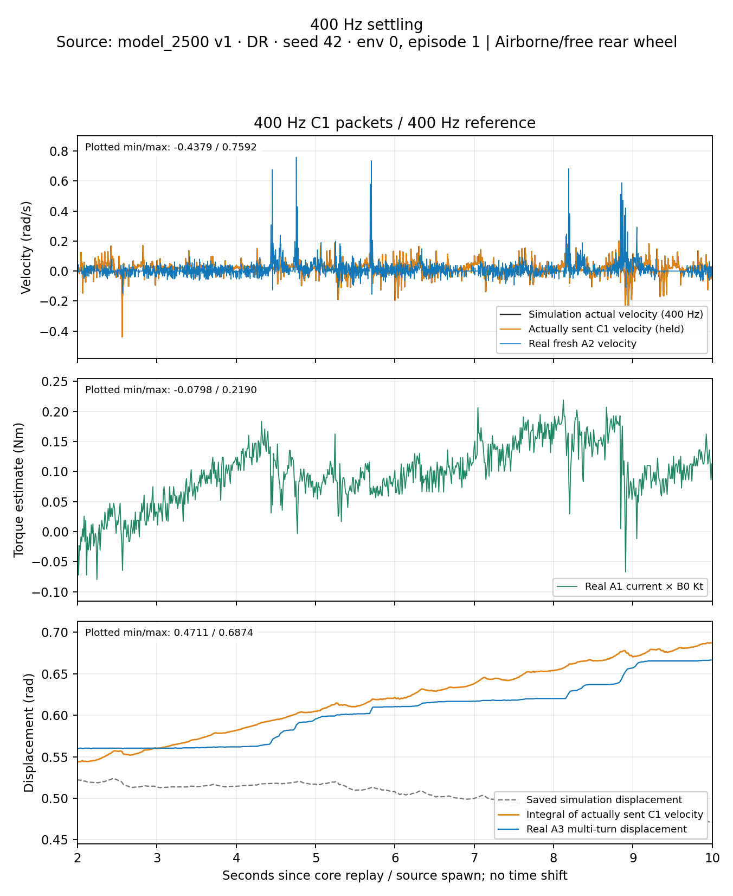
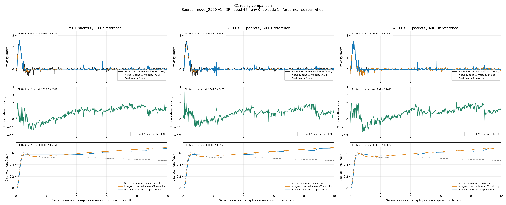
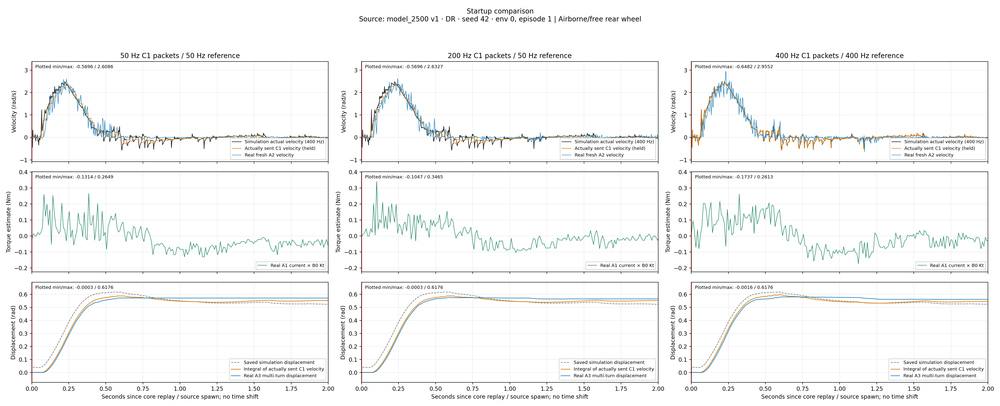
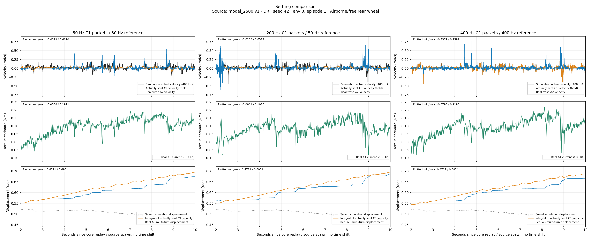
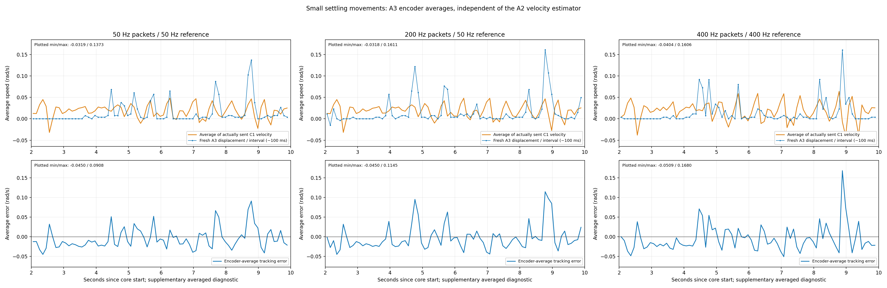
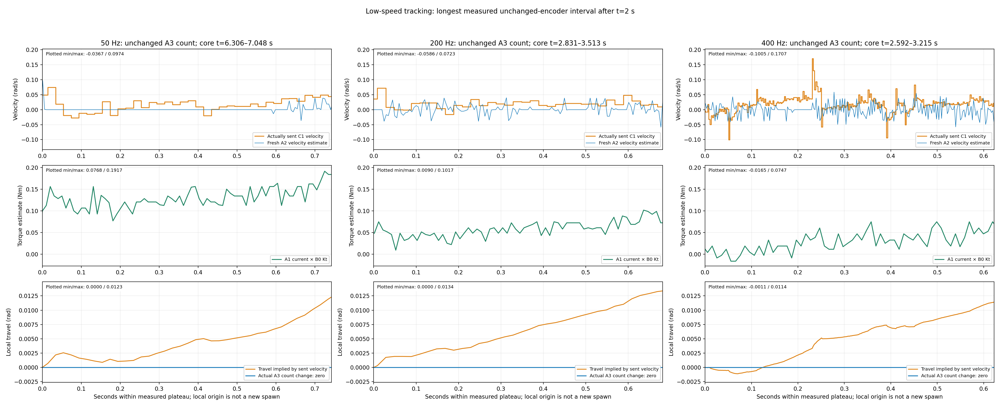
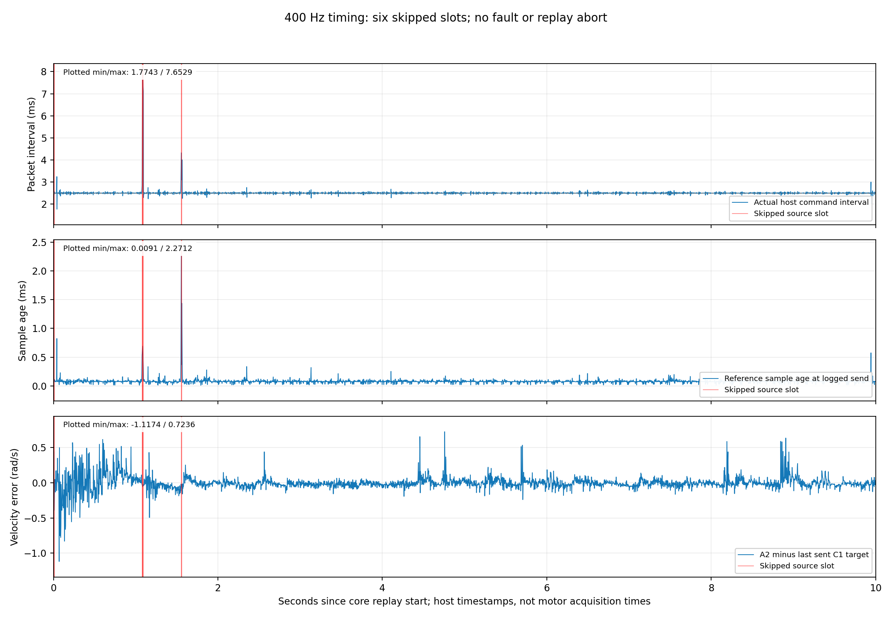

Rear C1 replay — 50 / 200 / 400 Hz
Model 2500 v1 · source DR · airborne/free. The 400 Hz run also uses a denser reference.
Analysis · Metrics CSV · Exact statistics · All figures PDF
400 Hz replay, full 10 seconds
PNG · SVG · PDF

400 Hz startup, 0–2 s
PNG · SVG · PDF

400 Hz settling, 2–10 s
PNG · SVG · PDF

50/200/400 Hz, full replay
PNG · SVG · PDF

50/200/400 Hz startup
PNG · SVG · PDF

50/200/400 Hz settling
PNG · SVG · PDF

Supplementary encoder averages
PNG · SVG · PDF

Unchanged encoder counts
PNG · SVG · PDF

400 Hz packet timing
PNG · SVG · PDF
